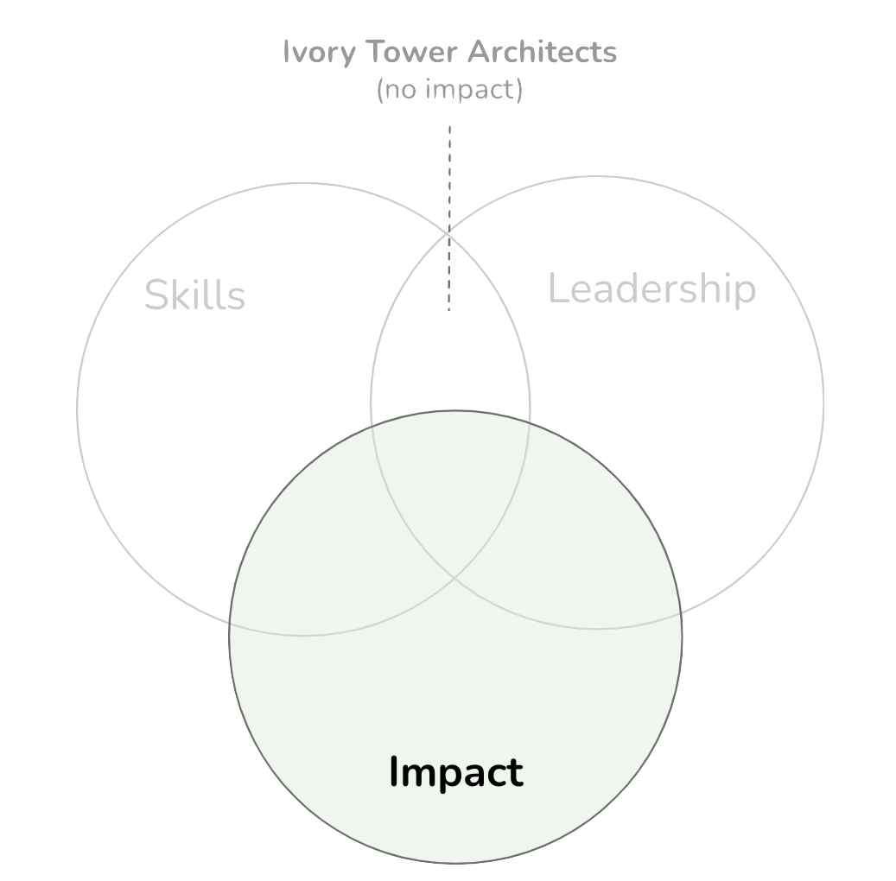

Making Impact
IN THIS SECTION, YOU WILL: Understand that architects’ work is evaluated based on their impact on the organization and get guidelines for making an impact.
KEY POINTS:
- Architects’ work is evaluated based on their impact on the organization.
- Architects can make an impact via three pillars: Big-Picture Thinking, Execution, and Leveling-Up.
When we think about what architects do—whether in tech, systems, or product design—it goes beyond their technical skills. What truly sets great architects apart is the impact they have on their organizations.
 Figure 1: Impact is one of the three main elements of being an architect (skills, impact, leadership). Leadership without impact lacks foundation and may signal that you have become an ivory tower architect with a weak relation to reality.
So, how can we actually measure that impact?
Architects play a crucial role in shaping outcomes, often in subtle but profound ways. Their contributions can typically be grouped into three key areas:
1. Spotting and Solving Strategic Problems
Great architects don’t just react to problems as they arise; they’re always on the lookout for potential challenges. They have a knack for identifying high-stakes issues that could hinder growth or create inefficiencies down the line. Whether it’s tackling architectural debt, addressing technical bottlenecks, or ensuring that systems align with business goals, they help lay the groundwork for sustained success. Their solutions are proactive and strategic, making sure that today’s choices pave the way for tomorrow’s achievements.
2. Creating Deep and Wide Organizational Impact
Architects juggle depth and breadth like few others can. They dive deep into complex issues within a system or product, providing clarity and expertise where it’s most needed. But they don’t stop there—they also take a step back to see how those solutions can be scaled across teams and domains. This ability to connect the dots across silos helps transform isolated wins into broader organizational success.
3. Delivering What Others Can’t
Some challenges require a unique mix of vision, influence, and technical know-how, and this is when architects really show their mettle. Whether it’s managing a high-stakes migration, balancing conflicting stakeholder needs, or charting a new architectural path, architects step up when the stakes are high and the margin for error is slim. Their real value lies in their ability to gain traction where others struggle, driving momentum at critical moments.
In a nutshell, architects aren’t just about designing systems—they’re outcome enablers. Their success isn’t just reflected in the diagrams they create or the code they review; it’s in the progress they facilitate. When they tackle real business challenges, harmonize teams, and deliver lasting solutions, they make a measurable and significant difference.
Pillars of Impact
As architects, we need to cultivate not just solid technical know-how, but also strong interpersonal and business skills. Ideally, these skills get refined through real-world experiences. But as we grow in our careers, it’s important to shift our focus from merely accumulating skills to actively building competencies that create real, measurable impact within our organizations.
I often find that grounding our development in concrete activities—real challenges that require both action and reflection—makes all the difference. This hands-on, outcome-driven approach allows us to align skill-building with actually delivering value in meaningful ways.
One way to frame this development journey is by looking at the Staff Engineering path. For example, Tanya Reilly’s The Staff Engineer’s Path and Will Larson’s Staff Engineer: Leadership beyond the management track provide fantastic insights into the responsibilities and expectations we face in architectural roles.

Figure 2: Key competencies of architects. Inspired by *The Staff Engineer’s Path by Tanya Reilly.*
Based on these frameworks, I like to break down the key competencies that lead to impactful architecture into three main pillars:
1. Big-Picture Thinking
First up, big-picture thinking. It’s essential for architects to look beyond just the code. We need to understand how our architectural choices fit into the larger strategy of the organization, the market landscape, and evolving technologies. It’s about crafting a technical vision aligned with business goals and helping everyone see that vision, too.
This includes skills like:
- Strategic planning
- Systems thinking
- Translating business needs into technical direction
- Anticipating long-term impacts and opportunities
2. Execution
Next is execution. This is where our ideas translate into real outcomes. As architects, we need to help teams deliver effective and sustainable solutions, which involves managing complexity, aligning stakeholders, and guiding teams through the ups and downs of real-life delivery.
Key skills in this area include:
- Technical leadership during delivery
- Cross-team collaboration
- Risk mitigation and adaptive planning
- Ensuring quality and fit-for-purpose outcomes
3. Leveling Up
Finally, let’s talk about leveling up. We don’t just build systems; we also build people and capabilities. Leveling up is all about continuous improvement—growing your own skills while also lifting others up. This creates resilient, high-performing teams through mentorship, coaching, and knowledge sharing.
This pillar involves:
- Coaching and mentoring
- Fostering a culture of learning
- Capturing knowledge into reusable patterns and practices
- Staying up-to-date with industry trends and techniques
By honing in on these three pillars—big-picture thinking, execution, and leveling up—we can evolve from skilled technicians into strategic change agents. This model not only enhances individual performance but also magnifies your influence throughout the organization. Let’s embrace this intentional development path together!
Big-Picture Thinking
You know, architects in an organization often have this unique ability to maintain a “helicopter view.” It’s a bit of a rare skill that lets them see across different teams, systems, and strategies, helping them to anticipate how decisions will play out in the long run.
This strategic perspective enables architects to make contributions in four key ways:
Spotting High-Leverage Points
Big-picture thinkers have a knack for identifying where small changes can lead to big results. Whether it’s addressing a bottleneck in a system, fixing a misalignment between teams, or uncovering a hidden scaling issue, architects shine when focusing on areas that provide the greatest return for the organization.
Helping Others See the Whole Picture
But it’s not just about keeping that big picture to themselves. Architects are great at helping others see it too! They share their insights through architectural reviews, roadmaps, or tools like Lightweight Architecture Analytics. This way, they boost the strategic literacy of the whole organization, creating alignment, reducing friction, and building a shared sense of purpose among teams.
Zooming In and Out
One of the coolest things about architects is their ability to thrive at both high altitudes and ground level. They can explain how a project aligns with long-term business goals, and then dive into the nitty-gritty details to ensure those ideas are practical and achievable. This talent for bridging strategy and execution really sets effective architecture leaders apart.
Uncovering Inefficiencies
From their high vantage point, architects can pinpoint systemic inefficiencies—like overlapping systems, redundant efforts, or misaligned dependencies—and drive improvements that benefit multiple teams. This often means suggesting better tools, simplifying architectures, or promoting reuse across different domains.
When architects consistently apply this big-picture lens, they bring strategic clarity to everything they engage with. They help teams not just build the right systems, but to do it in the right way for the right reasons.
Execution
Architects are often celebrated for their strategic vision, but they wear many hats—it’s not just about creating stunning designs; they also have a crucial role in driving real-world outcomes. To truly make an impact, architects need to go beyond crafting elegant systems. They must focus on delivering practical results and fostering teamwork. Success lies in blending deep technical know-how with a hands-on, pragmatic approach and a commitment to collaboration across the organization.
Let’s dive into how architects can shine when it comes to execution:
Delivering Results with Pragmatism
Architects truly add value not just through their ideas but by their knack for turning those ideas into tangible action. This means thinking practically, understanding constraints, and keeping a sharp eye on outcomes.
-
Build Solutions That Work in the Real World
Instead of getting lost in theoretical designs or overly complex models, effective architects focus on creating solutions that are doable, valuable, and grounded in reality. They assess what’s really needed and what’s feasible within the organization’s environment—be it technical, cultural, or operational. -
Simplify the Complex
One of the architect’s standout abilities is breaking down big, complicated problems into bite-sized, manageable pieces. This helps teams make steady progress, stay focused, and keep from feeling overwhelmed. Plus, it ensures that each step is practical and achievable. -
Plan with Constraints in Mind
Let’s be honest: ideal solutions don’t always fit within real-world limits. The best architects excel at balancing ambition with feasibility. They consider everything from technical debt to staffing to timelines. By planning this way, they set the stage for better execution grounded in what’s realistically deliverable.
Enhancing Collaboration
Architects are often in a unique spot where they can connect different parts of the organization. By building relationships, promoting alignment, and encouraging open communication, they help teams move faster and with clearer direction.
-
Create Strategic Alignment
A big part of an architect’s role is to clarify the bigger goals and help everyone see how their work contributes. When teams are aligned on purpose and direction, it cuts down on confusion, reduces wasted effort, and speeds up progress. -
Facilitate Stronger Teamwork
Think of architects as connectors and facilitators. They often take the lead in coordinating across teams, resolving friction points, and ensuring communication flows smoothly. This helps foster better cooperation and quicker decision-making. -
Engage Across Departments
Great architects don’t stick to their own lanes—they actively build bridges between teams and disciplines. They listen to diverse perspectives, understand different needs, and weave these insights into cohesive plans. This approach builds trust and helps break down silos, ultimately boosting organizational agility.
In essence, architects who focus on execution have the unique ability to transform big ideas into real impact. They combine technical expertise, practical judgment, and cross-team collaboration to ensure that solutions aren’t just smart—they’re successful. By doing this, they help the entire organization work more efficiently, effectively, and in sync.
Leveling Up
When we think about architects, it’s easy to see them as just technical whizzes. But really, they’re much more than that! They often take on roles as leaders, mentors, and role models who help elevate the level of excellence in an organization. They shape not just how systems are built but significantly influence how we work together and grow as a team.
Let’s explore this vital leadership role through three key perspectives: citizenship, design and architecture, and software engineering.
Citizenship: Supporting the Community and Culture
Architects often act as the champions of their organization’s technical culture and its professional community. Their impact goes far beyond just coding or design reviews.
-
Sharing Knowledge
Great architects don’t keep their insights to themselves. Whether through internal talks, blog posts, or speaking at conferences, they share their expertise, helping others learn and bringing fresh ideas back to the team. -
Leading by Example
Real leadership means tackling tough and meaningful challenges, especially those that involve collaboration across teams. When architects step up, they inspire others and show a commitment to ongoing improvement. -
Shaping a Strong Engineering Culture
By demonstrating curiosity, humility, and a love for craftsmanship, architects create a workplace where learning and collaboration are valued. They help establish an environment where teams can truly thrive and do their best work. -
Expanding Industry Influence
Some architects make waves beyond their own organizations. By sharing valuable insights and best practices with the broader tech community, they really help elevate industry standards.
Design and Architecture: Defining What “Good” Looks Like
Architects play a crucial role in establishing the technical foundation and direction of systems.
-
Setting and Evolving Standards
Thanks to their extensive experience, architects get to define and continuously refine what “good” architecture looks like. They establish guidelines and best practices that guide teams in making better design choices. -
Solving Big-Picture Problems
Architects have a knack for spotting systemic issues, like challenges in scalability or integration. They craft robust, forward-thinking solutions that ensure our software can adapt and grow over time.
Software Engineering: Staying Hands-On and Leading Technically
Despite their strategic roles, architects don’t shy away from hands-on engineering. Their deep expertise helps them promote technical excellence in practical, meaningful ways.
-
Demonstrating Best Practices
Architects set the standard in areas like clean coding, testing, documentation, and performance monitoring. By modeling high standards, they influence the habits and expectations of the entire team. -
Tackling Tough Challenges
When complex technical issues come up—be it due to high scale, complexity, or something new—architects are often the first to step in and lead the charge. Their ability to tackle these challenges helps unblock teams and enhances everyone’s skills.
By excelling in these areas, architects help their organizations level up—both technically and culturally. They raise standards, support better decision-making, and nurture a healthier, more effective engineering environment. Most importantly, they contribute to the growth and success of those around them!
Final Thoughts
You know, architecture is so much more than just technology. It’s really about making a lasting impact. The best architects are those who look beyond diagrams and technical choices to the real outcomes they can create: fostering collaboration, developing smarter systems, building stronger teams, and crafting more resilient organizations.
In this article, we dove into how architects add value through strategic problem-solving, influencing across teams, and delivering results that truly matter. We broke down this impact into three main pillars—big-picture thinking, execution, and leveling up—each one playing a crucial role in making a meaningful contribution to the organizations we work with.
What really ties everything together is this idea: being an architect means showing up with intention. It’s not just about what you know; it’s about how you apply that knowledge and who you bring along for the journey. Whether you’re helping your teams navigate through complexity, linking strategy to execution, or mentoring others, the influence you have can create ripples of change.
So let’s challenge ourselves to not only build better systems but to be the kind of architects who uplift everyone around us. Let’s keep pushing for growth, both for ourselves and for our teams. After all, that’s what truly makes a difference!
Questions to Consider
- Can you identify instances where you had to go deep into a specific issue and others where you needed a broad perspective across multiple teams? How did you manage both scenarios?
- How have you used your technical, strategic, execution, and people skills to deliver solutions? Can you share an example?
- How can you build on your technical, people, and business skills to positively impact your organization’s performance? How do you measure this impact?
- As an architect, how can you develop your big-picture thinking ability? Can you give an example of how your big-picture thinking helped to identify a high leverage point for maximum impact?
- Reflect on your role in execution. How can you help in delivering results and improving collaboration? Can you share an example where your pragmatism resulted in a meaningful solution?
- What initiatives could you have taken to improve collaboration and build trust within your organization?
- Have you contributed to the broader technical community through tech talks, education, publications, open-source projects, etc.?
- How could you help solve significant problems in your area and raise the bar of the engineering culture across the company?
- Can you provide an example of a systemic architectural problem you identified and the solution you proposed?
- How would you promote and demonstrate best-in-class practices in coding, documentation, testing, and monitoring?
On Being Architect |
|||
| ← | → | ||